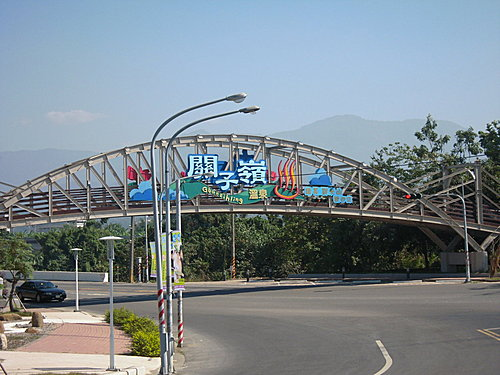

官方簡介：
交通部觀光局為滿足未來國內旅遊市場的廣大需求，
帶動週遭地區產業發展及資源保育等功能需求，
並且配合區域內曾文水庫、烏山頭水庫、
白河水庫、尖山埤和虎頭埤水庫，獨特堊地形
草山月世界、左鎮化石遺跡、平埔文化節慶活動、
關仔嶺溫泉區等豐富自然和人文資源，
報奉行政院核定於2005年11月26日
掛牌成立「西拉雅國家風景區管理處」，
為觀光局第13個國家風景區，
專責區域內規劃建設與經營管理工作，
提升遊憩品質並兼具振興地方產業任務。
行程簡介：
河東獅西拉雅冬之旅，
重點行程擺在白河水庫及關子嶺風景線，
早上悠遊白河水庫及白河小鎮風光，
車隊之出發點係關子嶺的嶺頂公園停車場，
海拔約250公尺 ，
大夥先一路下滑經關子嶺老街、麒麟隧道，
再至白河水庫風景區。
西拉雅國家風景區於此設有管理處及簡報中心，
簡報室之影片生動精彩，
讓人對這片土地之人文、地理有深刻之烙印。
早上行程約33公里 ，
大抵均是下坡及平地悠遊之暖身路線。
下午則是爬坡的挑戰路線，
行程約20公里 ，共計約53公里 。
@白河水庫，風光迷人
@西拉雅的雲海層層疊疊，裊裊動人。
@秋收後之花海

@白荷陶坊的陶藝作品，以「荷風」為主題，值得一遊。

@竹門的雪花冰及蚵嗲，是車友的最佳補給站。

@開懷暢飲。
@津津有味
@虎山意麵
於虎山小站午餐後，
沿大仙寺、碧雲寺、至水火同源，
一路均是UP、UP、UP的曲線風光，
再此提醒車友除埋頭苦幹外，
別忘了抬頭欣賞一下翠綠的山巒風光。
過了水火同源後，
皇天不負苦心人，
終於到達此路線的最高點--海拔495M ，
越過山顛，
順著滑行而下的疾風快感，
一會兒便至關子嶺溫泉泡湯區了。
汗流浹背之後，
來個泥漿美容溫泉浴真是舒暢無比，
晚餐再來頓大快朵貽的土雞大餐，
那是一定要的啦….
….讚 ……棒……
……棒…… .
.
真是美好的一天...........
@海拔150M
@用心品味
@心誠則靈
@神遊四海
@三級古績
@海拔350M
@海拔450M